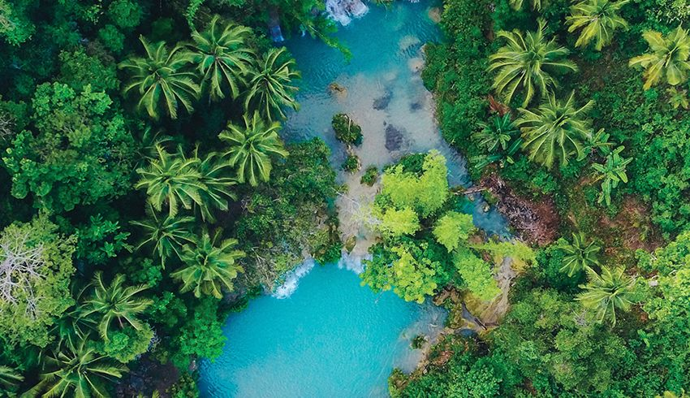
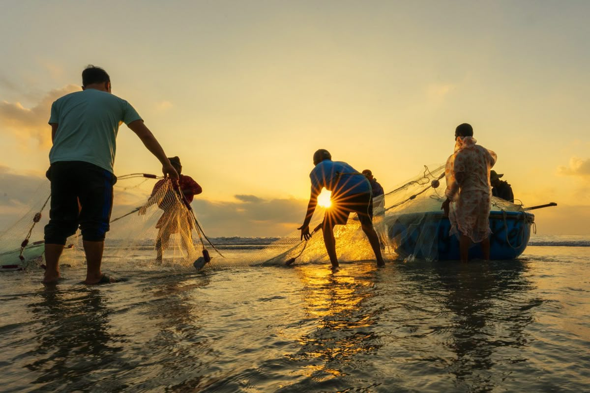
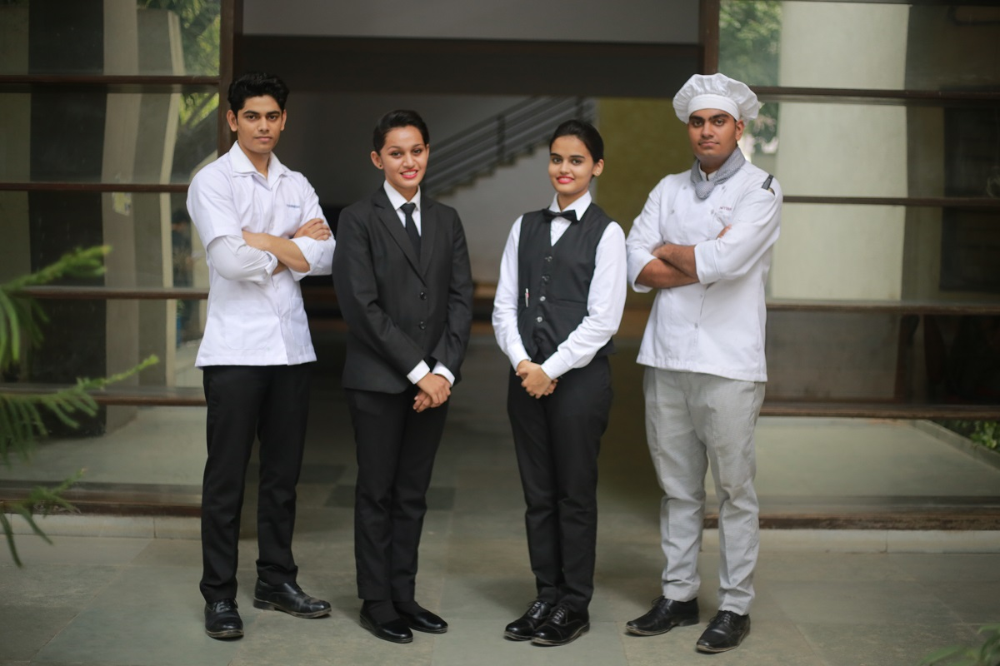
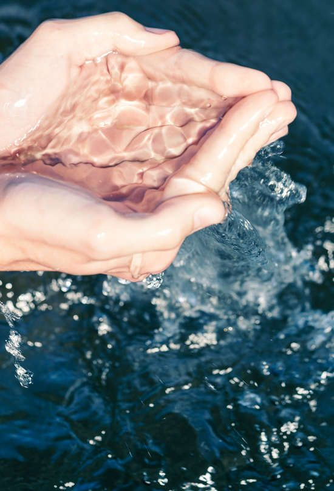

Luxury and responsibility are not opposites. At The Riviera, we believe the most beautiful places on earth can only be enjoyed if we commit to protecting them — today, and for every generation that follows.
Nestled in one of the world's most fragile marine ecosystems, The Riviera operates with the understanding that our island is not ours to own — it is ours to protect. We have aligned our operations with five United Nations Sustainable Development Goals that are most relevant to the Andaman archipelago, committing to measurable action across every aspect of resort life.

SDG Goal 14 · Life Below Water
Why this matters at The Riviera
The Andaman Islands host some of the most biodiverse coral reefs in the Indian Ocean — and some of the most threatened. As a private island resort, our primary amenity is not our villas; it is the ocean. We treat it accordingly. Every decision we make, from operations to guest experiences, is filtered through one question: does this protect what lives beneath the waves?

SDG Goal 12 · Responsible Consumption & Production
Why this matters at The Riviera
Supplying a private island resort in the Andamans is logistically challenging — every item shipped from the mainland carries a carbon cost. This reality pushes us to be radical about local sourcing and waste reduction. Our goal is simple: everything that enters the island either came from a nearby community or leaves the island as a resource, never as rubbish.

SDG Goal 7 · Affordable & Clean Energy
Why this matters at The Riviera
Most islands in the Andamans run on diesel generators — expensive, noisy, and deeply polluting. The Riviera made the decision at construction stage to build differently. By generating our own clean energy and designing our architecture to work with the tropical climate instead of fighting it, we aim to be the first diesel-free luxury resort in the Andaman archipelago.

SDG Goal 8 · Decent Work & Economic Growth
Why this matters at The Riviera
Sustainable tourism is hollow if the community next door does not benefit. The Andaman Islands have a young, talented population that has historically had limited access to world-class hospitality careers. The Riviera was designed to change this — not through charity, but through genuine employment, fair pay, and professional investment in local people.

SDG Goal 6 · Clean Water & Sanitation
Why this matters at The Riviera
Freshwater is the most precious and scarcest resource on a small island. Traditional groundwater extraction causes saltwater intrusion, destroying the island's natural water table forever. Equally critical: any untreated waste that reaches the ocean triggers algal blooms that suffocate coral. At The Riviera, not a single drop of groundwater is extracted, and not a single litre of untreated water leaves the island.

The Riviera has committed to achieving carbon negativity by 2030 — meaning we will remove more carbon from the atmosphere than we produce. This is not an aspiration. It is a legally binding target embedded in our operating charter, verified annually by an independent environmental auditor. The ocean gave us everything. We intend to give back more.